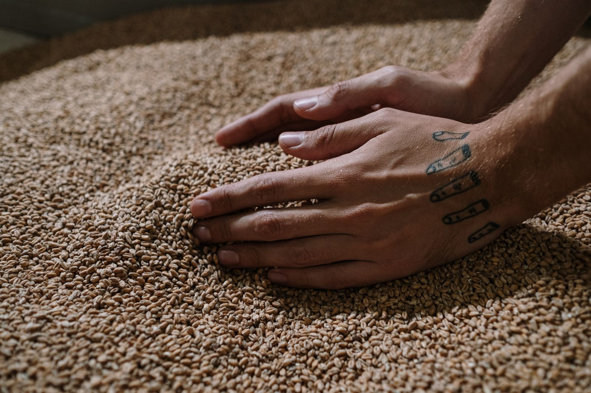

Output 01 · Grain
Dried distillers’ grains
High-protein livestock feed made from your spent grain. Farmers and feed markets already buy it.
- Buyers
- Livestock farms, feed markets
- Also used in
- Bioreactors, bioplastics, hydroponics